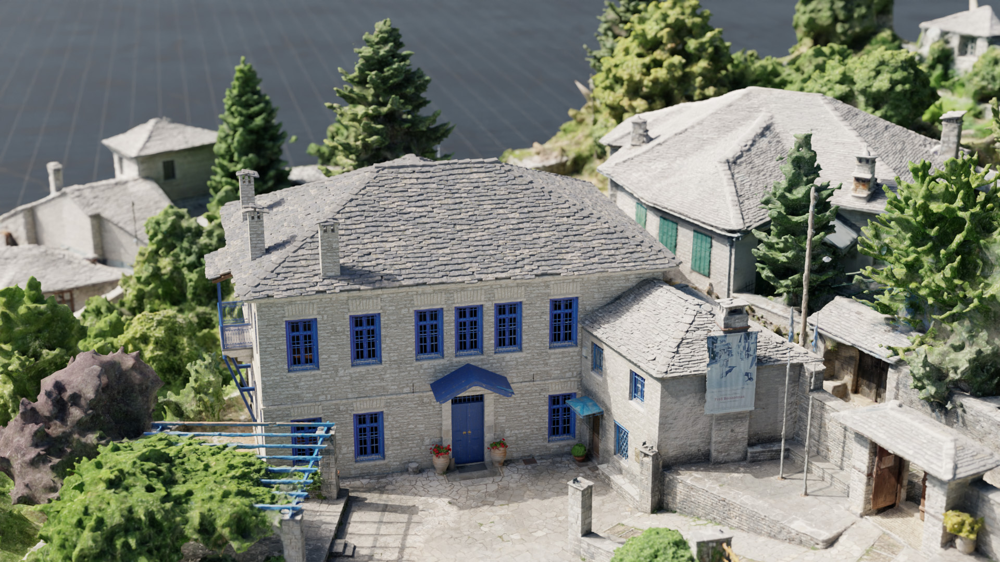
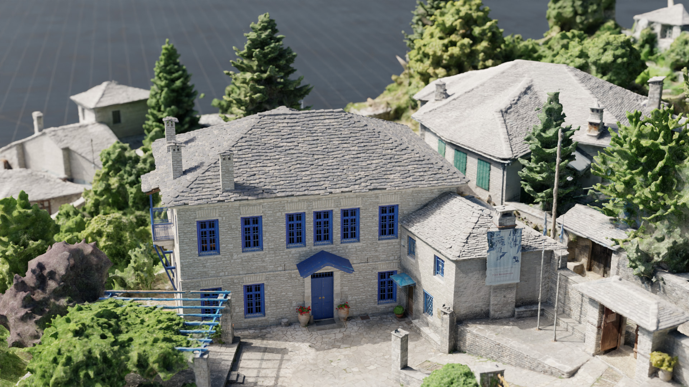
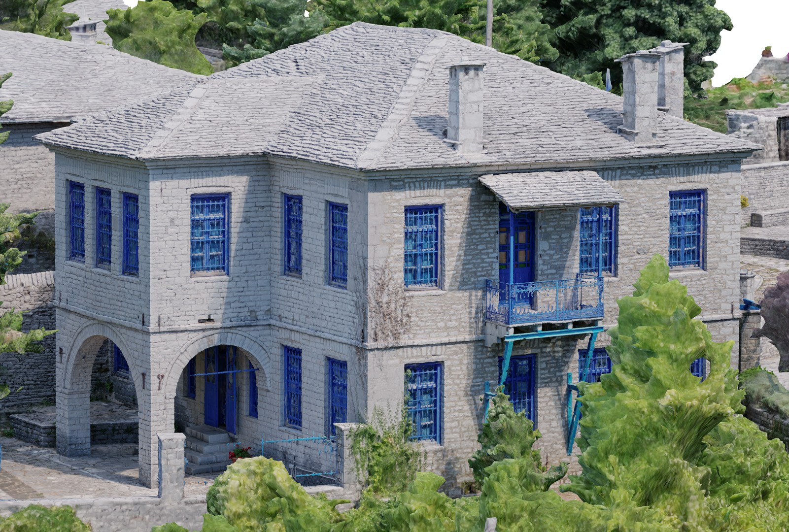
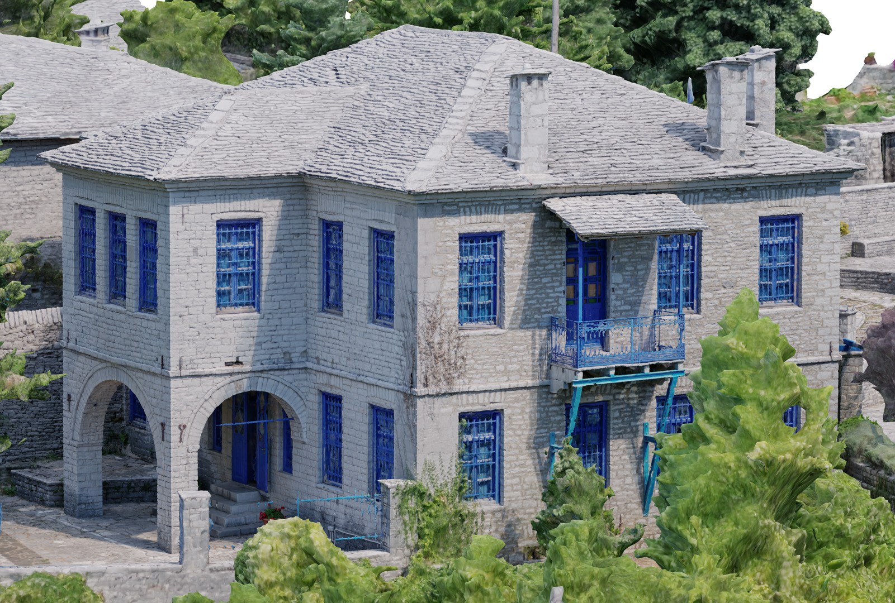
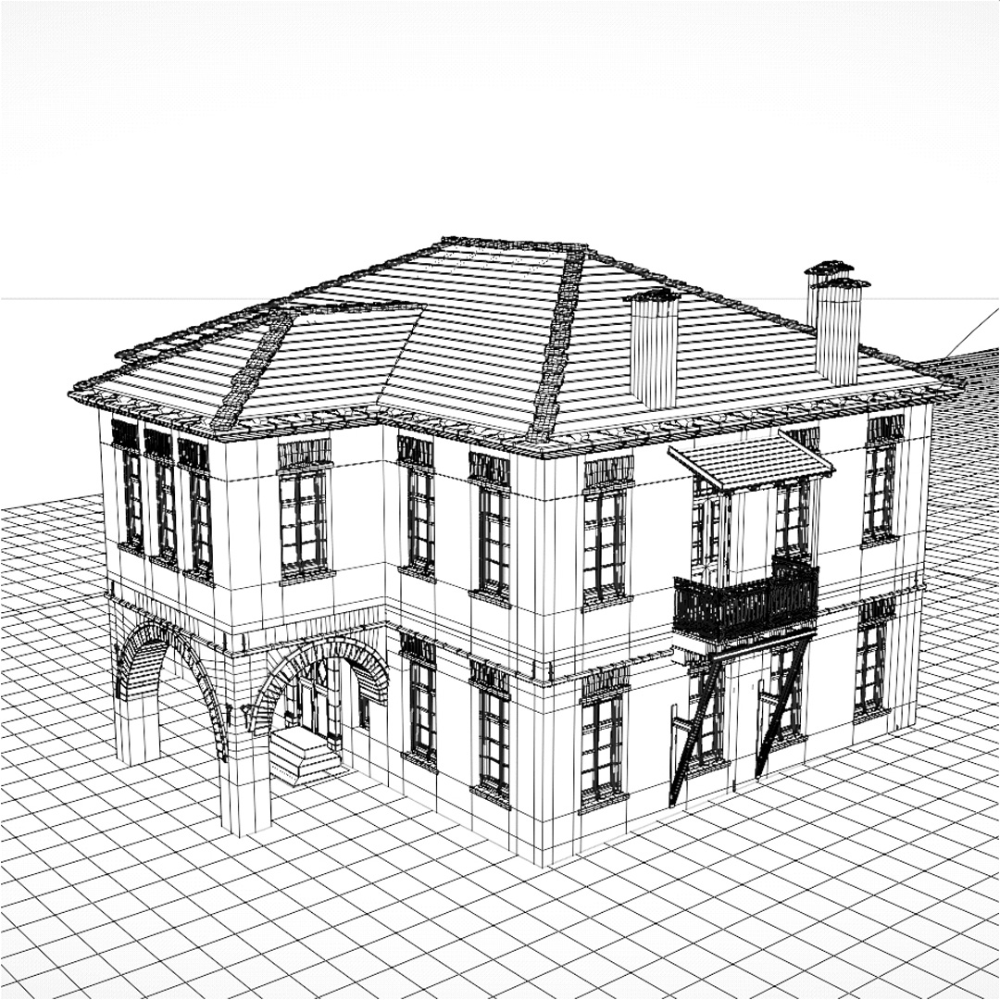
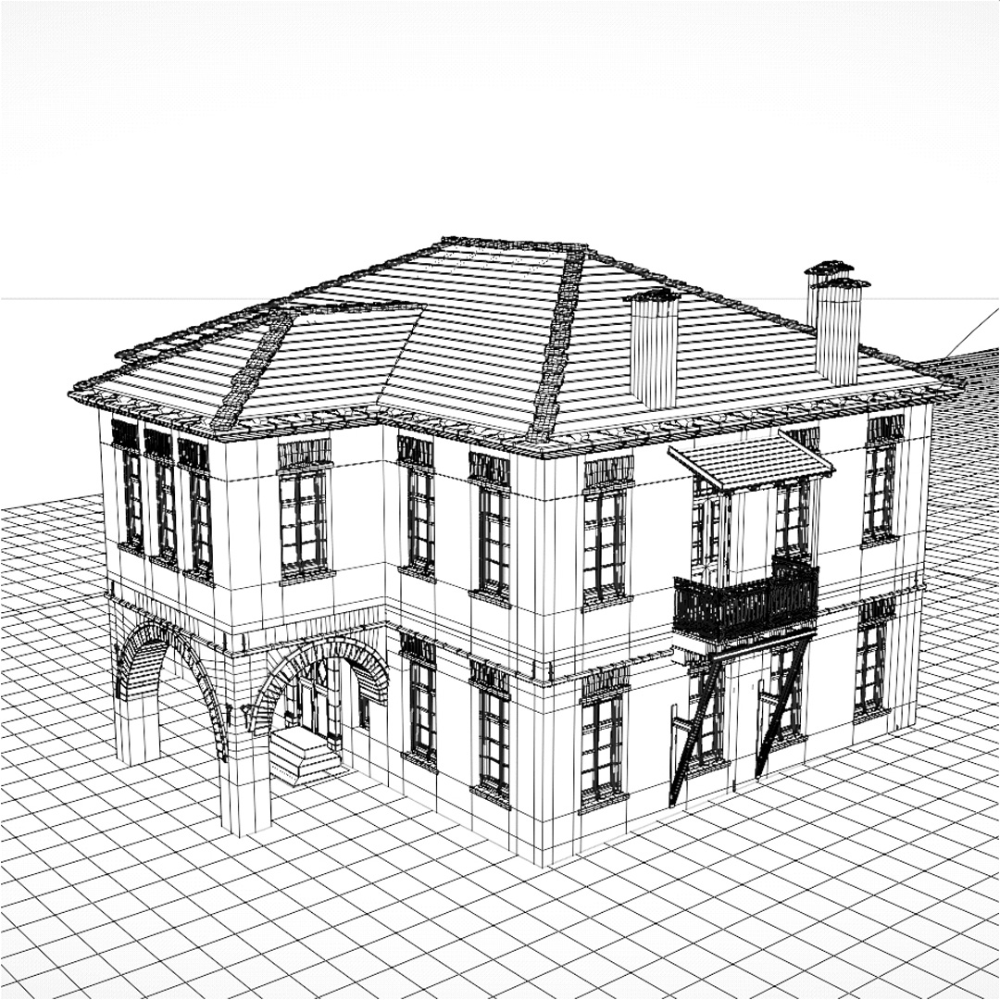

Το πρότζεκτ Ζαγορίσια Αρχιτεκτονική είναι μια ψηφιακή παρουσίαση της παραδοσιακής αρχιτεκτονικής της περιοχής του Ζαγορίου, προστατευόμενη από την UNESCO. Εστιάζοντας στο Αρχοντικό Παντάζη ως μελέτη περίπτωσης, παρουσιάζεται μια λεπτομερής τρισδιάστατη αποδόμηση του κτιρίου, αναδεικνύοντας τα αρχιτεκτονικά του χαρακτηριστικά και τις τεχνικές κατασκευής. Είχα τον ρόλο του lead 3D artist και animator, για την δημιουργία του οπτικού περιεχομένου της εφαρμογής, η οποία βρίσκεται στον παρακάτω σύνδεσμο.
Το βίντεο της εφαρμογής και επιλεγμένα στιγμιότυπα. Τα animation της αποδόμησης ελέγχονται μέσω προσαρμοσμένων συστημάτων Geometry Nodes που δημιουργήθηκαν στο Blender.

 

Στιγμιότυπα από τη διαδικασία της τρισδιάστατης ανακατασκευής.
 

 


Ένα εκτυπωμένο μοντέλο τριών χρωμάτων βασισμένο στην ψηφιακή ανακατασκευή.